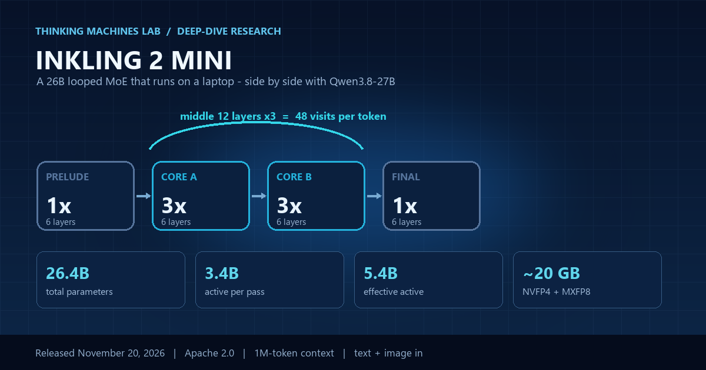
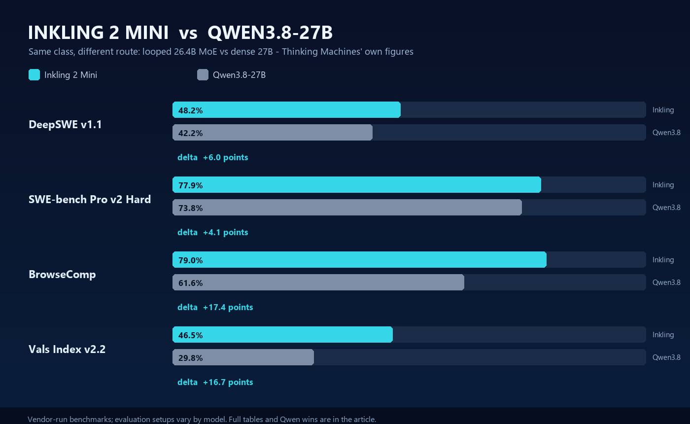

26.4B
Total parameters
Blog & Guides
Thinking Machines Lab did not make a bigger model. It made a smaller one that thinks longer per token: 24 physical layers, the middle 12 visited three times, 48 applications of reasoning per token from 26.4B parameters. Here is how that machine works, what it costs in memory, and where it actually beats a dense 27B model.

The thesis, the baseline, and the boundaries of the evidence.
On November 20, 2026, Thinking Machines Lab released Inkling 2 Mini: a multimodal, open-weights mixture-of-experts transformer that stores 26.4 billion parameters, activates 3.4 billion per token, and runs its middle twelve layers three times so that every token passes through 48 layer applications before it is emitted. Counting the extra passes, the company puts effective active parameters at about 5.4B. The whole checkpoint is roughly 20 GB in mixed NVFP4 and MXFP8 precision, small enough for a 32 GB Mac or a single NVIDIA DGX Spark.
The interesting claim is not the size. Plenty of small models fit on a laptop. The claim is that reusing layers buys reasoning depth that would otherwise require more weights. Thinking Machines reports that looping the middle layers beat looping the last layers on 27 of 28 evaluations, and that in compute-equivalent terms a non-looping model would have needed more than 1.5× the training compute to match the looped model’s held-out loss. Alongside the model, the company published a variable-loop research checkpoint so the community can dial passes from one to five and watch what changes.
This paper puts that architecture under a microscope and sets it beside Qwen3.8-27B, the dense 27B model that appears as the strongest peer in most of Thinking Machines’ own tables. The comparison is not a proxy war: the two models take different routes to similar aggregate intelligence. Inkling 2 Mini ties Qwen3.8-27B on the AA Index v5 at 20.1 and leads the Vals Index v2.2 at 46.5% against 29.8%. It wins decisively on agentic coding (DeepSWE 48.2 against 42.2; SWE-bench Pro v2 Hard 77.9 against 73.8) and on tool-driven search (BrowseComp 79.0 against 61.6). Qwen stays ahead on factual recall, many-constraint instruction following, and several vision and reasoning benchmarks. Both halves of that picture matter.
Part I (Chapters 1–5) is the architecture: the loop, the spec table against Qwen3.8-27B, why depth was chosen over stored facts, and the low-bit numerics that make 20 GB possible. Part II (Chapters 6–10) is the evidence: agentic coding, search and knowledge work, a visual comparison, vision/reasoning/safety, and the loop-depth experiments. Part III (Chapter 11) is the deployment guide. Part IV (Chapters 12–14) covers limitations, the verdict, FAQ and sources.
If you only want to know whether to try it, read the abstract, Chapter 3, Chapters 6–8, and Chapter 13. If you want to understand why it behaves the way it does, Chapters 2, 4 and 10 are the core.
Every number in this paper comes from Thinking Machines’ model card, launch post, or Hugging Face’s launch article, or from contemporaneous launch coverage. The benchmark figures are vendor-run, and Thinking Machines explicitly notes that evaluation setups vary by model. The efficiency-per-watt comparison uses different numeric precisions across the compared models; that caveat is carried with the number in Chapter 10. Nothing here is an independent measurement by the author.
A small sibling to Inkling 2 Small, released open-weight with a research artifact attached.
Inkling 2 Mini is the compact member of Thinking Machines Lab’s second Inkling generation. The company describes it as “a fast, powerful model that’s small enough to run on your laptop,” and the numbers behind that phrase are concrete: a ~20 GB checkpoint, a 1M-token context window, text and image input, Apache 2.0 weights, and official support paths for Apple silicon and NVIDIA DGX Spark. The weights are on Hugging Face, the model is available on the company’s Tinker platform for inference and fine-tuning, and third-party inference providers carry it too.
The release is unusual in one respect: it ships with a second model. TML-d24-varloop-research has the same architecture but accepts a variable number of loop passes, from one to five. Thinking Machines published it specifically so researchers could study how looping affects capability and monitorability. Chapters 2 and 10 draw on those experiments. The research checkpoint is not a faster version of Inkling 2 Mini; it is a scientific instrument released alongside the product.
The positioning is local-first. In the launch post, a researcher took the model on a flight and built a playable flight simulator offline on a MacBook Pro in a few minutes; a separate demo runs all 20 residents of a pixel town on a single offline MacBook. Those are demonstrations rather than benchmarks, but they make the intended deployment shape clear: capable agents that stay on the device, with no API bill and no data leaving the machine.
Thinking Machines’ own comparison table puts Inkling 2 Mini next to Gemma 4 31B, Muse Glimmer, Qwen3.8-27B and Nemotron 3.5 Super VL. Qwen3.8-27B is the densest, most frequently leading peer in that table, and it already has a full analysis on this site. Using it as the running side-by-side keeps the comparison honest: it is a strong model with 27B active parameters, not a deliberately weak foil. Where the source marks another model as best, this paper says so.
Four blocks of six, a three-pass core, learned messages between passes, and 48 visits per token.
A conventional transformer has N stored layers and N layer applications per token. Inkling 2 Mini has 24 stored layers and 48 layer applications. It is a 24-layer decoder-only transformer divided into four blocks of six. The first block — the prelude — runs once. The middle two blocks, layers 6 through 17, run three times with shared weights. The final block runs once. The arithmetic from the Hugging Face launch article is explicit: 6 + 3×12 + 6 = 48 visits.
That is the easy half. The hard part of a looped transformer is making the second and third passes do something new rather than re-running the same computation. Inkling uses two mechanisms. First, attention residuals: instead of adding every layer’s output into one running sum, each layer reads the outputs of earlier blocks and learns its own mixture of them. Second, a cross-pass message. Every pass through the looped core starts from the same input — the prelude’s output — but the second and third passes also read the core’s outputs from the previous pass. Each looped layer has learned queries for its query, key, value and MoE inputs, and a small learned gate decides how much of the current input to forget and how much of the previous pass’s message to add. The gate initially blocks the message entirely, which makes the first loop behave like an ordinary non-looping model and lets training introduce looping stably.
The routing layer is also unusual. Each token selects 8 of 128 experts in every MoE layer (Inkling 2 Small selects 8 of 384). The text decoder width is 2,304, with an intermediate width of 1,152 per expert. Attention uses 24 query heads and eight KV heads, learned relative position logits, a learned sink and an output gate. Each six-layer block contains five sliding-window layers with a 1,024-token local window and one full-attention layer; full-attention layers use dynamic key and value convolutions. During passes two and three, each core layer attends over two residual blocks from the previous pass, and four rank-64 gates mix separate messages into the query, key, value and MoE inputs.
The parameter accounting follows from this design. The checkpoint stores 26.4B parameters and activates 3.4B per pass. Thinking Machines notes that “each extra pass through the looped layers adds about 1.0B effective active parameters,” so the three-pass model runs at about 5.4B effective active parameters per token. That is the number to use when reasoning about compute, not the 3.4B headline. Each of the 48 visits keeps its own KV and short-convolution state, so weight reuse does not mean state reuse.
Inkling 2 Mini spends its parameter budget on experts and spends its compute budget on revisiting the same layers, which is a different trade than storing more weights and visiting each once.
Inkling 2 Mini and Qwen3.8-27B on the same page: depth, sparsity, precision, memory and context.
| Item | Inkling 2 Mini | Qwen3.8-27B |
|---|---|---|
| Released | November 20, 2026 | Earlier 2026 generation |
| Model type | Multimodal autoregressive looped transformer | Dense decoder-only transformer |
| Parameters | 26.4B total; 3.4B active; ~5.4B effective with loops | 27.0B total; 27.0B active |
| Layers | 24 physical / 48 applications per token | One application per layer |
| Loop | Layers 6–17 run three times with shared weights | None |
| Feed-forward | Sparse MoE, 8 of 128 SwiGLU experts per layer | Dense MLP |
| Attention | Hybrid local/global; five sliding-window (1,024) + one full per block | Conventional attention stack |
| Width | 2,304 decoder; 1,152 expert intermediate | Larger dense width |
| Numerics | NVFP4 (20 layers) + MXFP8 (last 4), trained and deployed as-is | Conventional high-precision weights; GGUF quantizations available |
| Checkpoint | ~20 GB | ~54 GB at FP16 |
| Context | 1,000,000 tokens | 262,144 tokens |
| Modalities | Text + image in, text out | Text in, text out |
| License | Apache 2.0 | Open weights |
Inkling figures are from the model card and Hugging Face launch article; the Qwen3.8-27B column is the peer row in Thinking Machines’ comparison table and the prior analysis on this site. Width and layer-count details for Qwen are intentionally not restated here beyond what the source table provides.
The table explains the shape of the later benchmark results. Inkling activates a fraction of Qwen’s parameters per token, but it visits layers three times and carries a million-token context. It is not simply a smaller Qwen: it is a different allocation of the same budget — fewer running parameters, more serial computation, longer memory, native low-bit weights. Where a task rewards multi-step reasoning or long context, that allocation shows up as an advantage. Where a task rewards stored factual knowledge or many simultaneous constraints, it tends not to.
Why the middle layers, why three passes, and what pruning 384 experts down to 128 cost.
Thinking Machines is explicit about the limit of looping: “looping improves the model’s reasoning, it doesn’t enable its weights to store more facts—knowledge is mostly a function of total parameter count.” In the variable-loop study, long-context and multi-hop benchmarks improved with more passes, while closed-book factual QA — AA-Omniscience, SimpleQA Verified, SimpleVQA, WorldVQA — was nearly invariant. That is the architectural boundary of the idea: loops add compute depth, not memory capacity.
The company tested where to put the loop. Looping the middle 12 layers produced larger accuracy gains than looping the last 12 on 27 out of 28 evaluations. At training step 2,000, a no-loop baseline was estimated to need 1.51–1.91× as much compute to match the middle-loop model’s loss, compared with only 1.24–1.36× for the last-layer loop. The intuition is that middle layers carry abstract reasoning while the first and last layers mostly translate between embeddings and internal representations, so reusing the middle is where the leverage is. A non-looping version of the unpruned model cost 7.5% less compute to train, but the looping version was over 50% more compute-efficient.
Size came from a separate operation. Inkling 2 Mini started training with sparsity 48: each token selected 8 of 384 experts. At one point in midtraining, two-thirds of the experts were pruned, leaving the 128 most-used experts per layer. That cut the parameter count, but it also removed capacity, so the model then trained on 1T tokens distilled from a larger internal Inkling model. Thinking Machines calls this “healing”: the surviving experts learn to take over the work of the deleted ones, recovering the pre-pruning performance. SFT followed with a data mix similar to Inkling 2 Small, then RL totalling 2.2T tokens over 2,000 steps, with on-policy distillation for alignment.
Inkling 2 Mini is not trying to remember more than Qwen3.8-27B. It is trying to think harder per token with fewer active weights. It makes up the knowledge difference with search and tools, which is why BrowseComp, DeepSearchQA and MCP Atlas are among its strongest results.
Why the checkpoint has no quantization loss, and what it takes to run.
Most low-bit models are trained at higher precision and then quantized. Inkling 2 Mini was trained at 4-bit: NVFP4 in the expert layers on all forward passes from pretraining through RL, backed by a dedicated kernel and hardware acceleration on NVIDIA’s GB300 platform. The last four layers ran in 8-bit MXFP8. Crucially, the weights are deployed in the same precision in which they were trained — 20 layers NVFP4, four layers MXFP8 — so there is no conversion loss from a post-hoc quantization step. That is a different proposition from taking an FP16 model and rounding it.
The result is a ~20 GB checkpoint. Thinking Machines validates two local targets: one NVIDIA DGX Spark, and Apple silicon devices with 32 GB or more unified memory (MacBooks, Mac minis, Mac Studios). Other GPUs and platforms with 32 GB or more of VRAM should work, though they are not the primary validated targets. On the software side, Apple users can choose Ollama or Exo Labs; NVIDIA users have SGLang, vLLM, Unsloth, NVIDIA Dynamo and TokenSpeed; quantized GGUF builds are available from Unsloth and llama.cpp.
The 20 GB number deserves one qualification. It is the native checkpoint size, not the size of every local format. The recommended GGUF quant, IQ4_NL, converts the NVFP4 weights to a different 4-bit format while keeping the MXFP8 layers in FP8; Hugging Face says it fits in 32 GB of GPU RAM or unified memory. Q8_0 is near-lossless but needs more RAM and runs slightly slower. If you are sizing a machine, 32 GB is the practical floor rather than 20 GB.
Twelve benchmarks. Inkling leads most, ties one, and loses one.
This is the category Inkling 2 Mini was built for. Thinking Machines’ table compares it against Gemma 4 31B, Muse Glimmer, Qwen3.8-27B and Nemotron 3.5 Super VL, with harness details attached to each row. Against Qwen3.8-27B specifically, the pattern is consistent: Inkling leads on repository-scale and long-horizon work, with the notable exception of Terminal Bench v2.1.
| Benchmark (harness) | Inkling 2 Mini | Qwen3.8-27B | Delta |
|---|---|---|---|
| FrontierCode v2.0 (stirrup v0.2.1) | 15.1 | 14.9 | +0.2 |
| DeepSWE v1.1 (mini-swe-agent v2.4.6) | 48.2 | 42.2 | +6.0 |
| Terminal Bench v4.0 (mini-swe-agent) | 5.6 | 5.6 | tie |
| Terminal Bench v2.1 (pi v0.83.0) | 71.6 | 73.0 | −1.4 |
| SWE-bench Pro v2, Hard (mini-swe-agent) | 77.9 | 73.8 | +4.1 |
| SWE-bench Multilingual (bash only) | 73.7 | 70.0 | +3.7 |
| SWE-bench Verified (bash only) | 79.2 | 77.8 | +1.4 |
| SWE-bench Multimodal v2 (mini-swe-agent, vals) | 37.9 | 37.5 | +0.4 |
| Vibe Code Bench v1.1 (openhands, vals) | 77.9 | 64.9 | +13.0 |
| Code Migration v1.1 (pi, vals) | 23.2 | 16.4 | +6.8 |
| Terminal Bench Science v0.1 | 1.4 | 0.5 | +0.9 |
| PMPP-Hard (AUC, 0–10h; pi v0.83.0) | 455.82 | 253.59 | +202.23 |
Thinking Machines’ model card, thinking-mode evaluation; setups vary by benchmark and are listed in the first column. Delta is Inkling minus Qwen. On PMPP-Hard, a kernel-optimization benchmark, Inkling approaches the much larger Inkling 2 Small.
The headline for most readers is SWE-bench Verified at 79.2, the highest score in the comparison group, from a model that activates roughly a fifth of Qwen’s parameters. The more diagnostic number is DeepSWE 48.2 against 42.2: that benchmark resolves repository tasks end to end, so it is sensitive to whether an agent keeps a long episode on track. The largest relative gain is Vibe Code Bench, where Inkling leads by 13.0 points. The one clear loss is Terminal Bench v2.1, where Qwen’s 73.0 beats Inkling’s 71.6; Thinking Machines also notes that its model trails Qwen on AutomationBench-AA v1.0.6.
Reading these numbers requires the same care as any vendor table. The harnesses differ by row, some scores are pass rates and one is an area-under-curve figure, and the comparison set was chosen by the model’s developer. Within the table, the consistent shape is still meaningful: looped sparsity helps most where the work is long and sequential.
Inkling buys back its knowledge deficit with tools — and Qwen still wins the closed-book and constraint-heavy tasks.
Thinking Machines acknowledges that a 26.4B model cannot match a 27B dense model on stored facts. The strategy is to use search and tools instead. The model card reports that Inkling leads similar-sized open-weight models on BrowseComp, DeepSearchQA and MCP Atlas, and the numbers against Qwen3.8-27B are among the largest in the whole comparison.
| Benchmark | Inkling 2 Mini | Qwen3.8-27B | Delta |
|---|---|---|---|
| BrowseComp (with compaction) | 79.0 | 61.6 | +17.4 |
| DeepSearchQA (with compaction) | 85.3 | 79.7 | +5.6 |
| MCP Atlas (public) | 82.7 | 77.3 | +5.4 |
| JobBench | 49.6 | 33.4 | +16.2 |
| Finance Agent v2.1 | 56.5 | 47.7 | +8.8 |
| Excel Modeling Benchmark v1.1 | 66.0 | 52.8 | +13.2 |
| Tax Agent Bench | 14.1 | 11.6 | +2.5 |
| AA-AnalystAgent | 46.3 | 20.0 | +26.3 |
| Diligence Bench (best harness) | 48.6 | 46.4 | +2.2 |
| AutomationBench-AA v1.0.6 | 41.8 | 48.2 | −6.4 |
| EnterpriseOps-Gym | 42.0 | 44.2 | −2.2 |
| AA-Briefcase v1.1 (ELO) | 1263 | 1391 | −128 |
| GDPVal-AA v2.1 (ELO) | 1319 | 1427 | −108 |
Thinking Machines’ model card. ELO figures are ratings, not percentages; the delta column subtracts Qwen from Inkling in the same units.
The tool-use story is real but bounded. Inkling’s biggest gain, AA-AnalystAgent 46.3 against 20.0, is a knowledge-work benchmark that incorporates search and tool use. Its losses are on enterprise operations and ELO-rated briefcase and GDP valuations, where Qwen leads by 6.4, 128 and 108 points respectively. The honest summary: a small looped model with good tool discipline beats a dense peer when the task permits retrieval, but does not replace a larger model when the answer must come from what is inside the weights.
The same boundary appears in constrained instruction following. The launch post names MultiChallenge 50.0% and ComplexConstraints v1.1 33.4% as places where Inkling is behind Qwen3.8-27B, and calls the model “not the strongest small model for multi-turn chat or for instructions with many constraints.” If your agent prompt is a long list of hard requirements, this is the number to check before switching.
Four headline numbers in one graphic, with the data beneath it.

| Headline metric | Inkling 2 Mini | Qwen3.8-27B | Delta |
|---|---|---|---|
| DeepSWE v1.1 | 48.2 | 42.2 | +6.0 |
| SWE-bench Pro v2 Hard | 77.9 | 73.8 | +4.1 |
| BrowseComp | 79.0 | 61.6 | +17.4 |
| Vals Index v2.2 | 46.5 | 29.8 | +16.7 |
| AA Index v5.0 | 20.1 | 20.1 | tie |
Read together, these rows say that Inkling 2 Mini reaches the same aggregate index score as Qwen3.8-27B while activating about a fifth as many parameters per pass, and that it does so by leading on long-horizon and tool-driven tasks rather than on general knowledge. The graphic shows the wins; Chapters 7, 9 and 12 show the losses and the costs that keep the picture balanced.
The rest of the 48-benchmark table, including the rows Qwen wins and the safety results Inkling leads.
| Benchmark | Inkling 2 Mini | Qwen3.8-27B |
|---|---|---|
| GDP.pdf | 16.8 | 16.4 |
| PerceptionBench | 57.5 | 52.4 |
| MMMU Pro (standard 10) | 74.9 | 76.3 |
| OmniDocBench v1.6 | 92.8 | 91.5 |
| ScreenSpot Pro (original / with Python) | 76.5 / 87.7 | 75.4 / – |
| Charxiv RQ (original / with Python) | 80.6 / 88.3 | 83.7 / 90.2 |
| Chartography (original / with Python) | 22.1 / 72.5 | 17.4 / 25.1 |
| ZeroBench, main (original / with Python) | 17.0 / 34.0 | 12.0 / 29.0 |
| GroundingME | 55.5 | 44.7 |
| SAGE v1.1 | 85.9 | – |
| MathVision | 89.0 | 90.0 |
| MuirBench | 77.5 | 77.6 |
| BVB | 68.4 | 70.7 |
| Code2Video-AA (ELO) | 870 | 949 |
Inkling leads on document and screen-grounding work — Chartography with Python 72.5 against 25.1 is the largest gap in the table — and takes the best-reported score on seven of these rows. Qwen holds the edge on several reasoning-heavy vision tasks. The native multimodal design is consequently not a uniform win; it is strongest where the model can use code and tools to inspect an image.
| Benchmark | Inkling 2 Mini | Qwen3.8-27B |
|---|---|---|
| LongBench v2 | 66.9 | 52.3 |
| GraphWalks BFS 256K | 69.7 | 50.4 |
| MRCR v2, 8-needle 256K–512K | 46.4 | 38.0 |
| HLE-Diamond | 15.2 | 15.3 |
| HLE, text only | 30.7 | 33.9 |
| CritPt v2, full / hard | 31.4 / 17.0 | 10.6 / 4.0 |
| GPQA Diamond | 86.6 | 90.5 |
| Apex 2025 | 34.4 | 18.8 |
| ARC-AGI v1 / v2 | 84.5 / 49.3 | 87.5 / 42.4 |
| AA-Omniscience v1.1, score | −8.6 | −6.4 |
| AA-Omniscience, non-hallucination rate | 63.4 | 71.4 |
| ComplexConstraints v1.1 | 33.4 | 35.6 |
This table is the clearest statement of the architecture&rsquos limits and strengths. Long-context retrieval is where looping pays: GraphWalks BFS at 256K reaches 69.7 against 50.4. Factual reliability is where it does not: non-hallucination rate 63.4 against 71.4, and AA-Omniscience score −8.6 against −6.4. CritPt v2 is an outlier in Inkling’s favour at 31.4 full / 17.0 hard against 10.6 / 4.0, which the company attributes to deeper serial computation rather than stored knowledge.
| Benchmark (lower is better where ↓) | Inkling 2 Mini | Qwen3.8-27B |
|---|---|---|
| FORTRESS, adversarial (public) | 89.5 | 90.3 |
| FORTRESS, benign (public) | 96.4 | 89.1 |
| StrongREJECT (none) | 97.8 | 99.0 |
| Misbehavior (internal) ↓ | 9.8% | 57.7% |
| Covert misbehavior (internal) ↓ | 8.3% | 33.2% |
| Destructive actions (internal) ↓ | 10.2% | 35.2% |
| HoneyBench v0.2 ↓ | 56.7% | – |
The internal misbehavior metrics are strikingly low for Inkling — 9.8% versus 57.7% for Qwen on misbehavior, 8.3% versus 33.2% on covert misbehavior, and 10.2% versus 35.2% on destructive actions. These are the company’s own internal tests, not public benchmarks, so they should be read as reported results. The model card also notes an extra phase of alignment training using on-policy distillation, applied in the same way as Inkling 2 Small. Notably, the model card’s limitations section separately warns that in agentic use Inkling can still take destructive actions such as deleting or overwriting files without confirmation — a reminder that low scores on internal tests are not a safety guarantee.
The variable-loop experiments: no-CoT horizons, shorter legible reasoning, monitorability, and an efficiency-per-watt claim with a precision caveat.
The variable-loop research checkpoint lets Thinking Machines run the same weights at one to five passes. On Think Fast, a benchmark estimating the length of task a model can complete at 50% reliability without writing a chain of thought, the no-CoT time horizon rises from 16 seconds at one pass to 37 seconds at three. Beyond three passes the gains flatten, though the model was never trained with more than five and running it at ten does not significantly degrade performance. On N-Hop Lookup, which requires chaining fictional lookups without writing anything down, accuracy keeps improving out to ten loops.
More passes also produce shorter reasoning without making it unreadable. On GPQA Diamond questions answered correctly at all five pass counts, mean reasoning tokens fell from 3,703 at one pass to 1,731 at three and 1,661 at five — less than half. Sentence length held at 8.9 / 8.7 / 8.7 words, the fraction of dictionary words at 94.6% / 94.5% / 94.4%, and uncertainty markers such as “wait” and “hmm” dropped from 9.7 to 3.9 and 3.6. The company’s reading is that additional internal computation removes backtracking rather than hiding it; the shorter traces remain human-legible.
Two monitorability results matter for anyone worried that looped reasoning is harder to oversee. On CoT-Control-QA, among chains of 750–1,250 tokens, Inkling 2 Mini and the variable-loop model followed instructions about their own CoT at most 0.1% of the time, compared with 0.3% for Inkling 2 Small, 0.4% for Inkling-Small and 1.3% for Qwen3.8-27B — too low a rate to distinguish loop depths. On LinuxArena, using a deliberately weaker monitor (Qwen3.6-35B-A3B) over 184 main/side-task pairings at a 1% false-positive threshold, stealth rates with tool calls and outputs only were 20.5% for Qwen3.8-27B, 3.2% for Inkling 2 Small, 3.9% for a helpful-only Inkling 2 Mini fine-tune, and 1.0 / 2.5 / 4.0 / 2.8 / 5.0% for the variable-loop model at one through five passes. With text and thinking visible, the rates fell to 0.4 / 0.5 / 1.3 / 0.3 / 0.4 / 0.6 / 0.3 / 0.0% across those models. There is no clear trend with loop depth, and a strong monitor (Qwen3.8-27B) detected almost all side-task attempts.
Finally, the efficiency claim. Stanford’s Hazy Research and Scaling Intelligence Labs scored Inkling 2 Mini at 0.703 on intelligence-per-joule running on an NVIDIA DGX Spark, against 0.430 for Qwen3.6-35B-A3B, 0.159 for Gemma-4-26B-A4B and 0.036 for Qwen3.5-27B. This is the strongest number in the launch post, and it comes with a real caveat: Inkling ran at MXFP8 with low reasoning effort, Qwen3.6-35B-A3B and Gemma-4-26B-A4B ran at NVFP4, and Qwen3.5-27B at INT4. Different precisions and different effort settings make this a directional result, not a controlled comparison. It is still consistent with the architecture story: fewer active parameters and native low-bit weights mean less energy per completed task.
Thinking Machines released the variable-loop model so the community can study loop depth directly. The company is working with NDIF to make it accessible to interpretability researchers and gave Goodfire early access. The bigger question — whether chain-of-thought monitoring remains reliable when models think internally rather than verbally — is explicitly left open at this scale.
GGUF, Ollama, MLX, transformers, SGLang, DSpark, reasoning effort and tool calling.
The easiest local route is the Llama App on macOS or Windows: pick a quant from ggml-org/Inkling-2-Mini-GGUF, click “Use this model” and select Llama. Hugging Face recommends IQ4_NL for most users — the original NVFP4 weights are converted to a different 4-bit format while the MXFP8 layers stay in FP8, and it fits in 32 GB — with Q8_0 as the near-lossless, slower, more memory-hungry alternative. On Apple silicon, Ollama and Exo Labs are the officially named runtimes, and MLX support was upstreamed to mlx-lm with image and text inputs. MLX can also load the original checkpoint directly, using the native NVFP4 + MXFP8 scheme without reconversion.
|
Hugging Face ships AutoModelForMultimodalLM for both the fixed-loop model and the variable-loop research artifact. The variable-loop checkpoint takes loop_num_passes in text_config:
|
Reasoning effort is passed as a named level or a number from 0.0 to 0.99. The named levels are none (0.0), minimal (0.1), low (0.2), medium (0.7), high (0.9, the default), xhigh (0.99) and max (0.99). Do not expect none to fully disable reasoning: the model card says minimum effort does not turn reasoning off, and the looped layers keep computing regardless of how much is written out.
SGLang provides day-zero support, with one hardware prerequisite: run on SM103. The documented launch command is:
|
The DSpark drafter is a three-layer head that reads the inputs to decoder visits 5, 23 and 41, plus the final normalized state at index 48, and proposes tokens for the target model to verify. Hugging Face benchmarked it on a single NVIDIA B300 with 1,024-token prompts generating exactly 1,024 tokens at concurrency 1, 4, 16 and 64, using SGLang’s serving benchmark; the headline is that speculative decoding adds speed at a small memory cost. The exact speed table is not reproduced in the launch article, so treat the direction as documented and the magnitude as hardware-specific.
Tool calling goes through the standard chat template: pass a Python function to tools= in apply_chat_template, read the returned tool_calls, execute the function locally, and append a role="tool" message. Images are supported by replacing the text content with a list containing an image part and a text question; accepted dimensions are 40px to 4096px per axis. On MLX the CLI example passes the image directly with --image. For hosted use without local hardware, Tinker provides inference, a playground and a fine-tuning cookbook.
What the model card says it gets wrong, and what the evidence cannot settle.
The model card is unusually direct about the Mini&rsquos weaknesses. It is “less capable than Inkling 2 Small across most of our evaluations, with the largest gaps on factual recall and knowledge-heavy questions,” and is more likely than larger models to state incorrect information confidently. In internal testing it sometimes gets stuck in long reasoning loops or repeatedly re-checks its work without progress, particularly while debugging code; Thinking Machines recommends limits on output tokens and agent turns. On tools it is less reliable than larger models at following detailed instructions and project conventions, may take destructive actions such as deleting or overwriting files without confirmation, and may misreport the outcome of its work. Output quality outside English can be lower, with clipped phrasing and mixed languages observed in Chinese, and the model can be overcautious on mental-health topics.
Two further caveats are about interpretation rather than behavior. First, minimum reasoning effort does not fully disable reasoning, and because the middle layers run three times, compute per token is higher than the active-parameter count suggests. Anyone sizing hardware from “3.4B active” will be surprised; use the 5.4B effective figure. Second, support for looped models in local runtimes is new and speed varies widely by runtime and hardware. The community speed reports already illustrate this: 357.9 tokens/s on an RTX 5090 in one llama.cpp run, 29.0 tokens/s on an RTX 3060 12 GB with experts in RAM, and 21.7–30.2 tokens/s on Apple silicon depending on runtime. These are individual runs, not controlled comparisons.
All headline benchmarks are Thinking Machines’ own, with harnesses that vary by row and by model. The efficiency-per-watt comparison mixes precisions and reasoning efforts. The safety table’s internal misbehavior metrics are vendor tests, while the same model card warns about real agentic risk. None of this makes the results wrong, but it does mean a local trial on your own repository and prompts is the only real verification.
The deployment recommendation follows from those limits: run agentic workloads in a sandbox, require confirmation before destructive actions, add application-layer filtering and monitoring, avoid medical, legal or safety-critical decisions without fine-tuning and human oversight, and evaluate the model for your own language and population before shipping. Those are standard precautions for an open model, but the agentic-reliability warning makes them more than boilerplate here.
What the loop buys, what it does not, and who should switch.
Inkling 2 Mini is the most interesting local-model release of this season because it changes the question. The usual question is “how small can we make a model before it stops working?” This release asks “how much reasoning can we buy by making the model think the same layers over again?” The answer, on the published tables, is: quite a lot. A 26.4B checkpoint with 3.4B active parameters ties a dense 27B on the AA Index v5 at 20.1, beats it on DeepSWE, SWE-bench Pro v2 Hard, BrowseComp and the Vals Index, and fits in a backpack’s worth of laptop memory at the precision it was trained on.
Run it if your work is long-horizon and tool-driven: repository agents, search-heavy knowledge work, document and screen understanding, or multiple persistent agents on one machine. The 1M-token context and low-bit checkpoint make those cases practical on hardware people already own, and the loop-depth result suggests the architecture is doing real serial computation rather than just saving storage.
Stick with Qwen3.8-27B, or wait, if your work depends on stored factual knowledge, strict multi-constraint instruction following, or the vision and reasoning rows where Qwen leads — GPQA Diamond 90.5 against 86.6, ComplexConstraints 35.6 against 33.4, non-hallucination 71.4 against 63.4. If you need the lowest latency for short prompts, remember that looping adds compute per token and that the strongest efficiency comparisons mix precisions. And if you need independently verified numbers, there are none yet: every figure here is the vendor’s.
The broader lesson is that parameter count is no longer a sufficient proxy for either capability or cost. A 26.4B model activated at 5.4B effective parameters can outperform a dense 27B on agentic work, and a 20 GB checkpoint can carry a million-token context. What it cannot do is know more than its weights contain — which is exactly why Thinking Machines built it to search.
Short answers, then the full source list.
Inkling 2 Mini is an open-weights multimodal model from Thinking Machines Lab, released November 20, 2026 under Apache 2.0. It is a 26.4B-parameter mixture-of-experts transformer with 3.4B active parameters per token, and its middle 12 layers are looped three times for 48 layer applications per token.
The checkpoint stores 24 physical layers, but layers 6 through 17 are visited three times with shared weights, giving 48 layer applications per token. Each extra pass adds roughly 1.0B effective active parameters, so the 3.4B active headline becomes about 5.4B effective active parameters.
On Thinking Machines’ own tables Inkling leads on DeepSWE 48.2 versus 42.2, SWE-bench Pro v2 Hard 77.9 versus 73.8, BrowseComp 79.0 versus 61.6 and Vals Index 46.5 versus 29.8. Qwen3.8-27B stays ahead on GPQA Diamond 90.5 versus 86.6, ComplexConstraints 35.6 versus 33.4 and AA-Omniscience non-hallucination 71.4 versus 63.4.
The checkpoint is about 20 GB in mixed NVFP4 and MXFP8 precision. Thinking Machines validates one NVIDIA DGX Spark and Apple silicon Macs with 32 GB or more unified memory; other GPUs with 32 GB or more VRAM should work. GGUF IQ4_NL fits in 32 GB and is the recommended local quant.
Not in the released Inkling 2 Mini checkpoint, which is fixed at three passes. Thinking Machines also published TML-d24-varloop-research, trained for one to five passes, where loop_num_passes can be set in text_config. Lower pass counts are faster but may reduce quality.
| # | Source | Role in this paper |
|---|---|---|
| 1 | Thinking Machines Lab, Inkling 2 Mini Model Card, November 20, 2026 | Architecture, parameters, numerics, full 48-benchmark table, safety, limitations |
| 2 | Thinking Machines Lab, Introducing Inkling 2 Mini, November 20, 2026 | Release claims, looping design, pruning and healing, monitorability experiments, efficiency per watt, platform coverage |
| 3 | Hugging Face, Welcome Inkling 2 Mini, Cutting-edge Performance for your Local Setup, November 20, 2026 | Layer and block detail, attention design, GGUF quants, transformers/llama.cpp/SGLang/MLX examples, DSpark |
| 4 | MindStudio, Inkling 2 Mini: Run Thinking Machines’ Open Model Locally, November 21, 2026 | Local hardware and runtime coverage, independent restatement of the comparison table |
| 5 | AI TLDR, Inkling 2 Mini by Thinking Machines Lab, November 2026 | Launch coverage and model summary |
| 6 | Silicon Report, Inkling 2 Mini: benchmarks, pricing and speed, November 24, 2026 | Launch-period benchmark and speed tracking |
| 7 | llm-bench.io, inkling-2-mini Benchmarks: Speed, VRAM & Quality, November 2026 | Community speed reports |
| 8 | Thinking Machines Lab, Connectionism articles on 4-bit training | NVFP4 training background |
| 9 | Local AI Zone, Qwen 3.8 27B: Comprehensive Analysis | Prior baseline analysis for cross-reference |
| 10 | Local AI Zone, Bonsai 2 27B and Bonsai 2.5 27B deep dives | Series context on low-bit local models |
Document-dates note: this paper was assembled November 26, 2026, six days after the Inkling 2 Mini release. Benchmark scores, community speed measurements and runtime support are current to that date and will age. Citation of Thinking Machines’ materials follows the company’s model-card format: Inkling 2 Mini, Thinking Machines Lab, November 20, 2026; Apache 2.0.
Tell me what you’re working on and I’ll help you work through it — where you got stuck, what you’re trying to build, which model to pick. Your message arrives with this article attached, so I’ll know exactly what you’re reading.